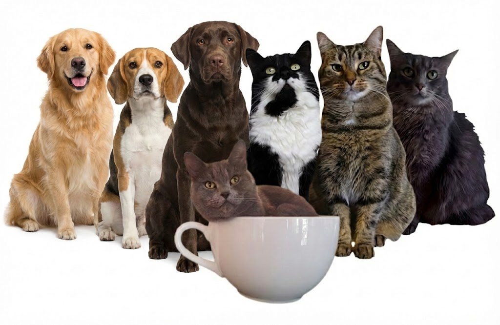

Rencontrer nos merveilleux animaux
Nos Chats

Comète (Fiche #55920)
Domestique femelle d'environ 2 ans
Je m'appelle Comète et je suis à la recherche d'une nouvelle famille d'adoption pour la vie! L'équipe de la SPA Mauricie dit de moi que je suis affectueuse et calme. Je suis rapidement à l'aise dans un nouvel environnement. Je peux vivre avec enfants de tous les âges, je n'ai pas encore été évaluée au niveau de mon interaction avec les chiens ou d'autres petits animaux, je peux cohabiter avec d'autres chats. J'ai besoin d'une nourriture qui favorise une bonne santé.

Élias (Fiche #56250)
Domestique mâle d'environ 5 ans
Je m'appelle Élias et je suis à la recherche d'une nouvelle famille d'adoption pour la vie! L'équipe de la SPA Mauricie dit de moi que je suis affectueux, calme et explorateur. Je suis rapidement à l'aise dans un nouvel environnement. Je peux vivre avec enfants de tous les âges, je n'ai pas encore été évalué au niveau de mon interaction avec les chiens ou d'autres petits animaux, je peux cohabiter avec d'autres chats. J'ai besoin d'une nourriture qui favorise une bonne santé.

Beignet (Fiche #55965)
Domestique mâle d'environ 5 ans
Je m'appelle Beignet et je suis à la recherche d'une nouvelle famille d'adoption pour la vie! L'équipe de la SPA Mauricie dit de moi que je suis affectueux et calme. Je suis rapidement à l'aise dans un nouvel environnement. Je peux vivre avec enfants de tous les âges, je n'ai pas encore été évalué au niveau de mon interaction avec les chiens ou d'autres petits animaux, je peux cohabiter avec d'autres chats. J'ai besoin d'une nourriture qui favorise une bonne santé.

Dolorès (Fiche #53681)
Domestique femelle d'environ 1 an
Je m'appelle Dolorès et je suis à la recherche d'une nouvelle famille d'adoption pour la vie! L'équipe de la SPA Mauricie dit de moi que je suis affectueuse, calme et exploratrice. Je suis rapidement à l'aise dans un nouvel environnement. Je peux vivre avec enfants de tous les âges, je n'ai pas encore été évaluée au niveau de mon interaction avec les chiens ou d'autres petits animaux, je peux cohabiter avec d'autres chats. J'ai besoin d'une nourriture qui favorise une bonne santé.
Nos Chiens
Wiggle (Fiche #55020)
Husky mâle d'environ 7 ans, 65 livres
Wiggle est un adorable Husky amoureux des caresses et des humains. Il recherche des gens actifs, afin de le marcher à chaque jour, car c'est son activité favorite (renifler partout et arroser quelques poteaux)! Wiggle porte bien son nom, il adore se faire gratter les fesses et il se tortille dans tous les sens pour avoir encore plus de câlins. C'est un chien un peu insécure dans un nouveau milieu qui aura besoin de gens présents pour l'aider à s'adapter et l'habituer progressivement à rester seul dans sa nouvelle maison. Wiggle devra être attaché lors des sorties, afin d'éviter les fugues. Il serait bien heureux d'avoir une cour clôturée. Il s'entend avec certains chiens femelles qui sont douces et respectueuses, mais a une préférence pour la compagnie des humains!
Giovanni (Fiche #55488)
Labrador croisé rottweiler mâle d'environ 1 an, 65 livres
Giovanni a une bouille super sympathique et est un chien très affectueux une fois en confiance. Il a un tempérament très colleux, mais a plus la personnalité du Rottweiler que du Labrador. Il sera plus heureux comme chien unique, à avoir l'attention de ses maîtres et ses choses à lui seul. Il aime jouer à la balle et aller marcher, mais il a aussi un tempérament plus relax et pantouflard. Giovanni peut faire de la protection de ressources et recherche un maître à l'aise de respecter ses signaux et son espace lorsqu'il va manger/ gruger un os ou avoir un jouet/objet. Il faudra prôner une éducation très positive avec lui et favoriser un principe d'échange si on veut lui retirer quelque chose. Il sera aussi important de lui offrir un espace bien à lui pour se retirer (par exemple sa cage).
Decibel (Fiche #54095)
Berger australien femelle d'environ 1 an, 45 livres
Decibel aura obligatoirement besoin de vivre avec un ou des chien(s) sociable(s) et équilibré(s) afin de l'accompagner au quotidien. Decibel est ce qu'on appelle "double merle" et est complètement sourde. Sa vision n'est pas parfaite, mais elle se débrouille bien! C'est une chienne très enjouée et énergique, qui adore la compagnie des autres chiens pour la sécuriser, mais aussi pour s'amuser avec eux! Decibel aura besoin de gens patients et disponibles afin de l'aider à s'adapter, mais qui seront aussi en mesure d'entamer son éducation. Il faudra adapter le tout à son handicap et être en mesure d'assurer sa sécurité. Une cour clôturée sera préférable pour éviter les accidents, car elle peut avoir tendance à courir après les voitures! Decibel devient facilement surchargée lorsqu'il y a trop d'action autour d'elle et aura besoin d'un environnement calme, sinon elle se montre plus vocale. Elle pourrait aussi cohabiter avec un chat très habitués aux chiens excités et qui saura faire sa place, car elle peut se montrer intense avec les minous! Decibel serait heureuse à la campagne et de pouvoir passer beaucoup de temps dehors.

Ti-Loup (Fiche #56103)
Husky croisé montagne des pyrénées mâle de 4 ans et demi
Ti-Loup est un gros toutou qui aura besoin d'une famille pouvant lui offrir de l'espace pour jouer dehors, mais surtout BEAUCOUP de présence, car il peut se montrer anxieux lorsqu'il est seul. Ti-Loup est costaud et a un côté vocal assumé, autant lorsqu'il s'ennuie que lorsqu'il veut avertir du mouvement autour de son territoire. Il serait heureux à la campagne ou dans un environnement très calme, sans trop de va-et-vient. Ti-Loup supporte mal la vie au refuge et a bien hâte de trouver une famille où il pourra décompresser! C'est un chien actif, mais qui a une bonne éducation et qui sait être très calme dans la maison une fois son exercice fait. Ti-Loup s'entend avec certains chiens de sa taille, mais peut aussi se montrer plus réactif avec d'autres. Pour ces raisons, il serait probablement plus heureux comme chien unique, mais à socialiser progressivement avec certains chiens de son entourage. Ti-Loup recherche des gens patients et compréhensifs qui vont prôner une éducation très positive et lui laisser le temps nécessaire pour s'adapter à la maison.